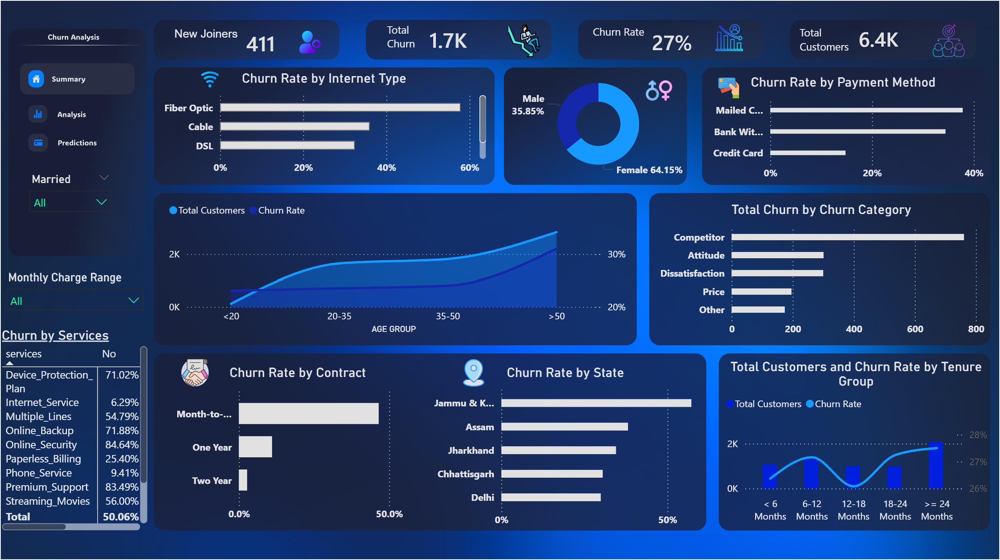

Transforming raw data into meaningful stories and actionable insights.
View My WorkI am a data enthusiast dedicated to uncovering patterns and solving complex problems through data. My focus is on writing clean code, building intuitive dashboards, and applying statistical analysis to drive decisions.
Faculty of Computers and Information (2nd Year)
Professional Skills - Data Analysis Track

An end-to-end data analysis project aimed at understanding customer retention. I extracted and cleaned the dataset, performed exploratory data analysis (EDA), and built an interactive dashboard to highlight key churn metrics and trends.